著鹿計畫 關於著鹿計畫 |
|
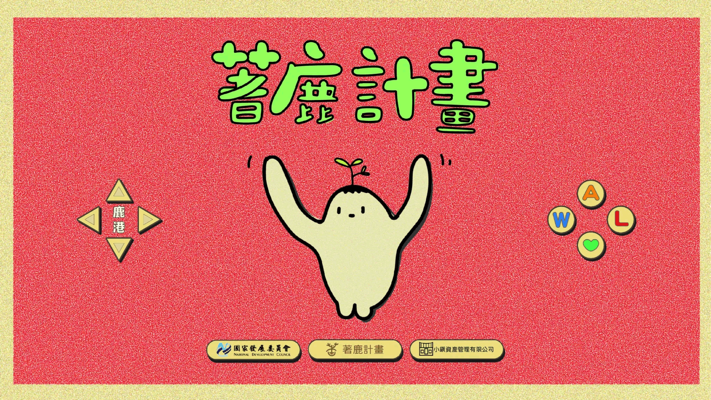 |
小鎮資產管理有限公司提案「著鹿計畫」獲選國發會110年-地方創生青年培力工作站計畫延續至今，致力於推動鹿港的青年培力計畫，透過鹿港聚落老屋空間盤點、著鹿實驗室、讀書會、講座、製作podcast節目，從硬體到軟體，協助想「著鹿」的青年可以透過地方支持系統，從探索、發想、實踐等過程中，都可以尋求青培工作站的協助。 |
著鹿目標與機制
青年培力工作站目標 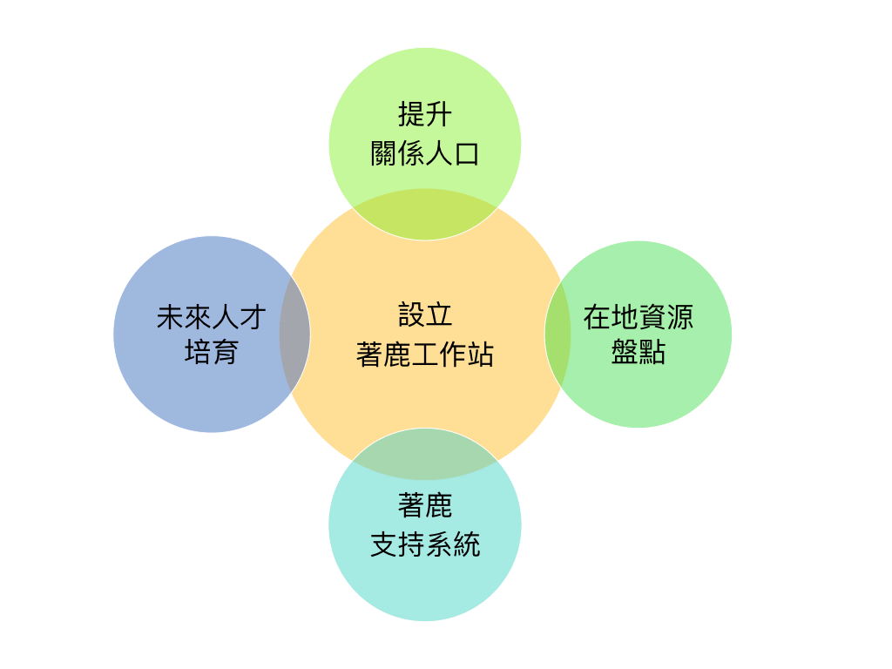 |
老屋修復再利用機制 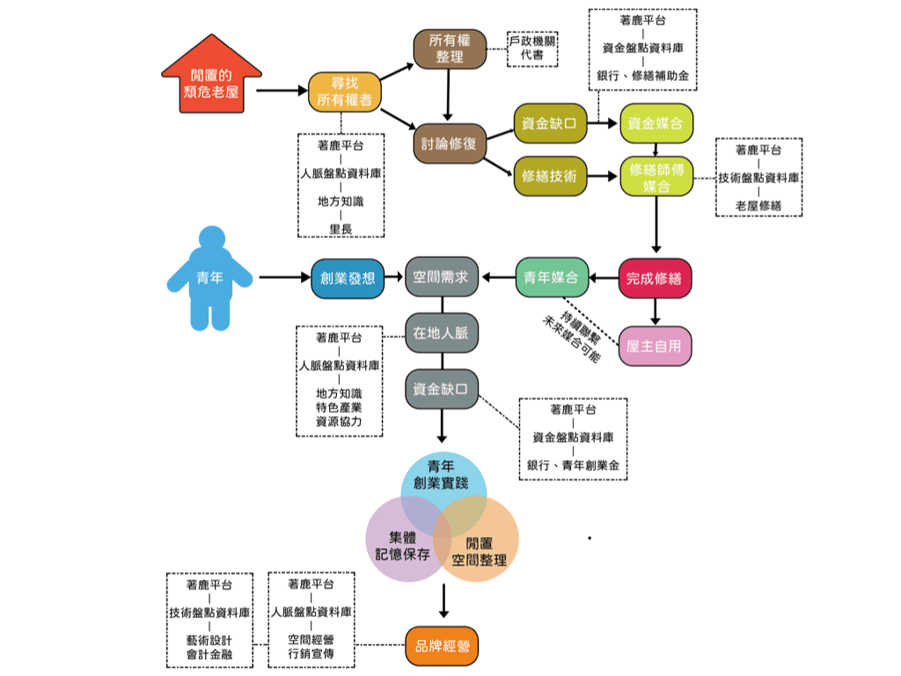 |
著鹿實驗室 |
|
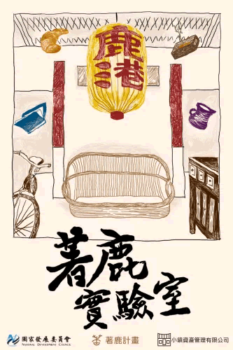 |
|
著鹿讀書會 |
|
2/19《菜場搜神記》蘇凌著 |
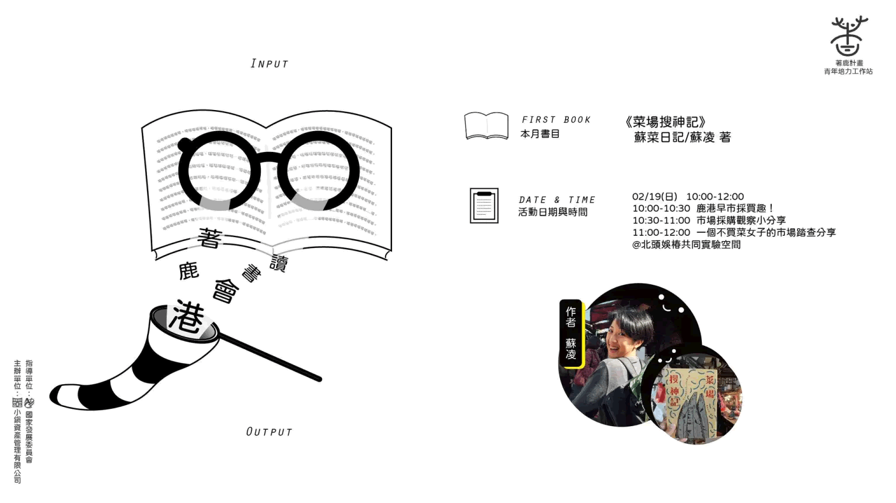 |
3/5《鬼地方》陳思宏著 |
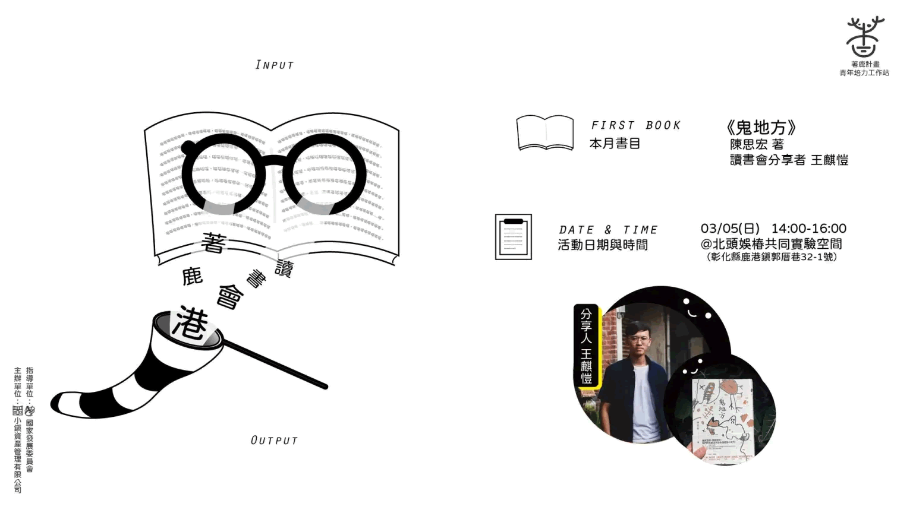 |
4/9《憤怒的菩薩》陳舜臣著 |
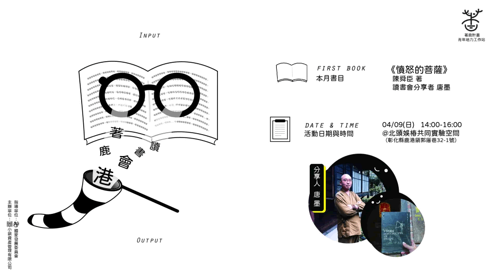 |
9/25《行過洛津》施叔青 著 |
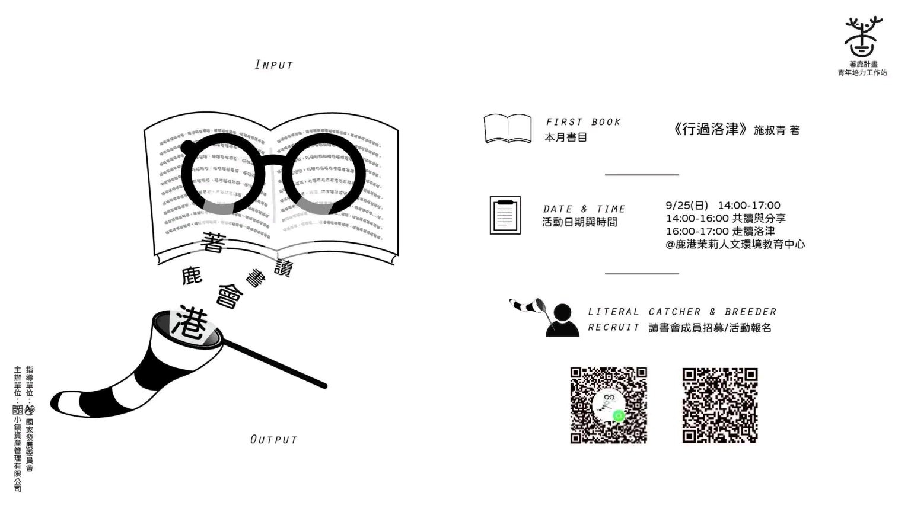 |
10/30《茶桌異聞》殺豬的牛二 著 |
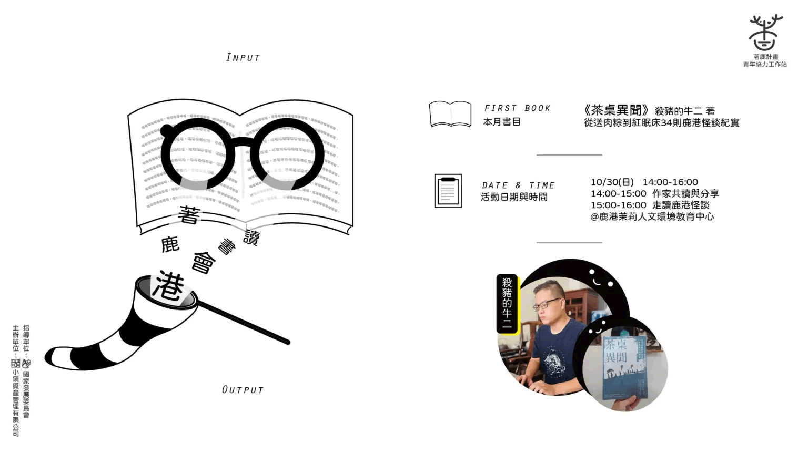 |
11/13 《二我影像 老照片見證家族史》 陳淑美 著 |
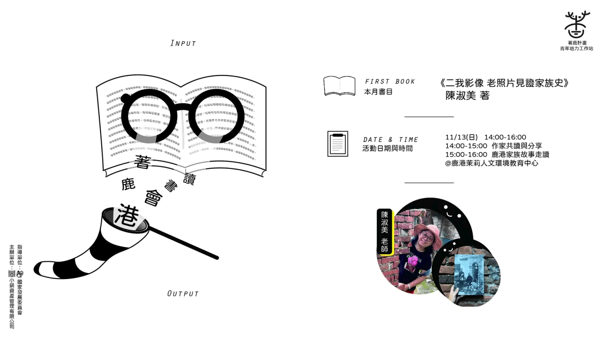 |
各活動詳情
著鹿在地講座
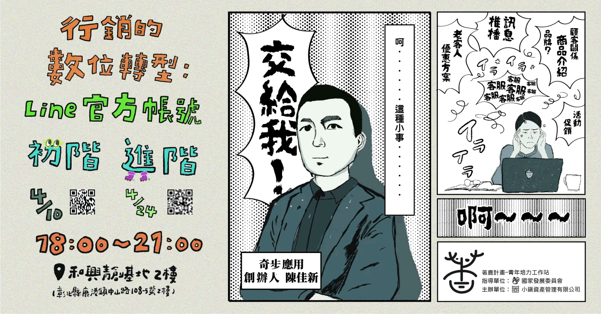
主題：行銷的數位轉型:Line 官方帳號-進階課程 分享者介紹：陳佳新 創業的過程總是會遇到許多困難及挫折，不管是對於創業初期與地方連結及社群媒體打造的方法，往往都是過程中持續練習的經驗，在社群資源爆炸的年代，創業初期你又會使用哪幾種資源呢？你還在用臉書經營客服嗎？台灣 9 成的人都有 LINE ，所以熟客經營首選用 LINE 。 LINE 官方帳號不是私人帳號，可以多人小編一起收發訊息，除了文字貼圖，還有其他豐富多元的格式。企業、商家、個人、創業家朋友，都應該立即開通 LINE 官方帳號。想學習如何使用嗎？現在就來參加 3 小時工作坊吧。 ＊課程大綱＊ 備註：因為課程為實作課程，學員當天需自帶筆電以便實際操作！ |
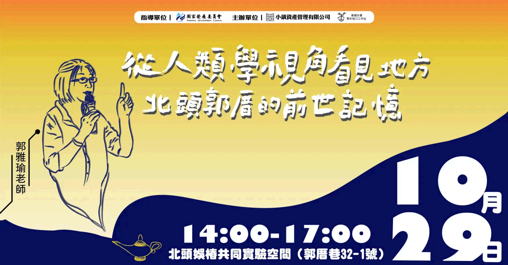 |
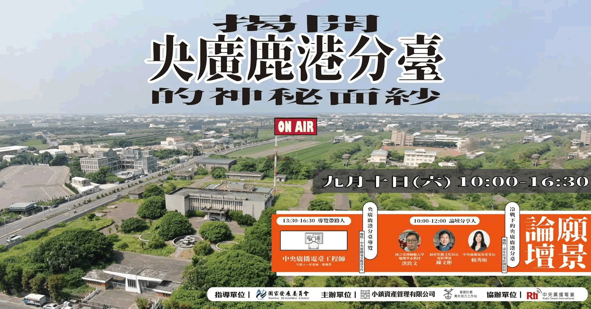 |
從人類學角度看見地方北頭郭厝的前世記憶-講座
日期：2022/10/29(六）下午14:00~17:00 地點：北頭娛椿共同實驗空間 講者|郭雅瑜老師 |
「中央廣播電臺」 首發場
日期：2022/9/10(六） 地點：鹿港童年往事莊園民宿 論壇主題：冷戰下的央廣鹿港分臺 |
各活動詳情
聯絡我們： |
小鎮文化團隊： |
地址：鹿港鎮郭厝巷32-1號
|
小鎮資產管理有限公司
|
小艾人文背包客棧
|
北頭娛椿共同實驗空間
|